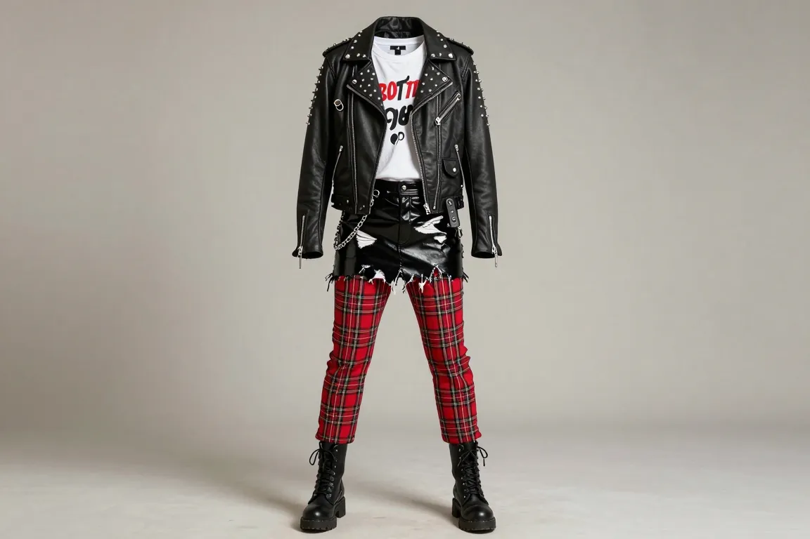

мода · 1976–1984 · также: Панк-одежда, Облик бондаж, Облик Seditionaries, Британский панк
Одежда лондонской панк-сцены с 1976 года. Рваные и заколотые футболки, клетчатые брюки-бондаж, кожаные куртки с заклёпками, резина и ПВХ и английские булавки как украшение.

Главная идея
Одежда — протест, который носитель делает руками: вещь порвана, заколота и исписана, и шокирует нарочно.
Принципы дизайна
Рвите, режьте или вспарывайте ткань и закалывайте или стягивайте разрез английской булавкой или шнуром.
Печатайте лозунг или картинку на простой хлопковой футболке шелкографией в одном-двух плоских цветах.
Кройте брюки узкими, 16–18 см по низу, и соединяйте штанины ремнём-бондаж.
Берите чёрную кожу, шотландку, ПВХ и резину как основные ткани.
Закрепляйте 20 и более металлических заклёпок или шипов вдоль воротника и плеча кожаной куртки.
Держите облик цепями, молниями, английскими булавками и ошейниками.
Делайте или переделывайте вещь сами и оставляйте каждый стежок и разрыв видимым.